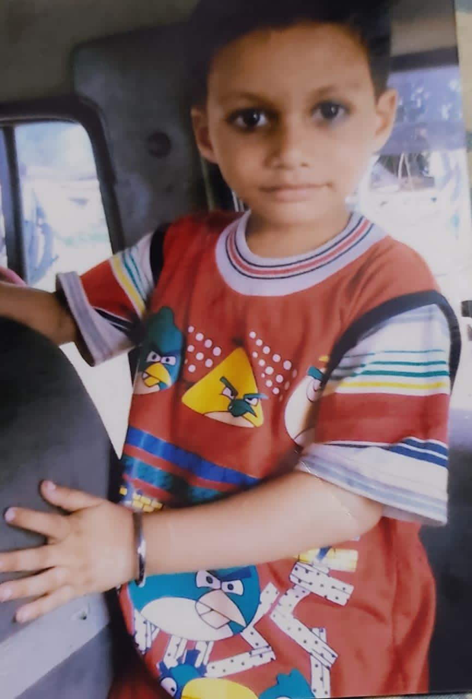
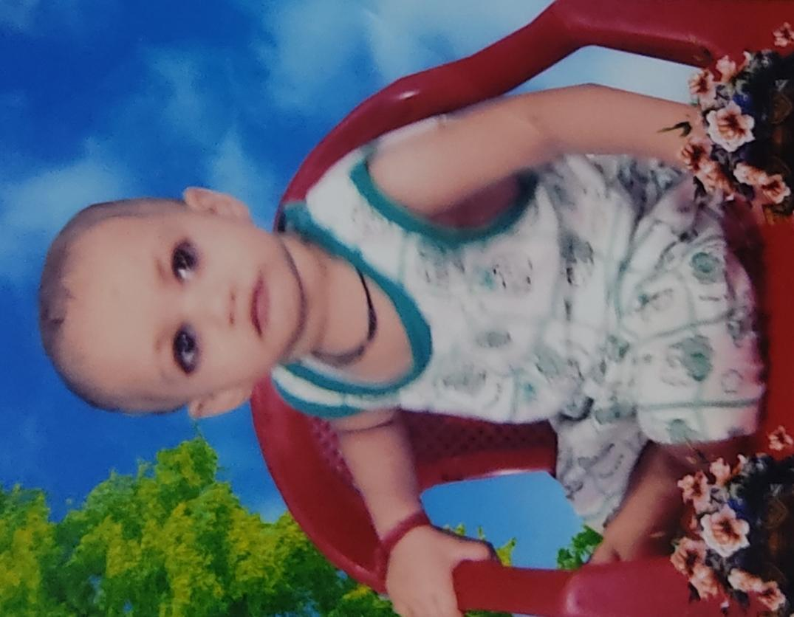
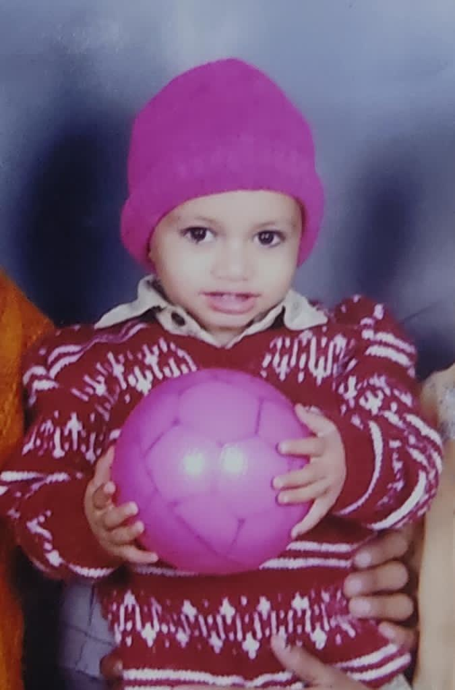

For Milan
Some people become memories.
Some people become a part of your story.
CHAPTER I
Before we knew
what memories were.
Before the jokes, the late conversations, the stupid moments that somehow became the best ones—there was simply you, growing up and becoming the person you are today.

Little moments.
Big story.
CHAPTER II
Growing up
isn't just about age.
It's about the people who slowly turn ordinary days into stories you never want to forget.

The years changed.
The memories stayed.
CHAPTER III · A NOTE FOR YOU
Milan,
I don't think birthdays are only about counting another year. They're a reminder of how far someone has come—and how many moments are still waiting ahead.
You have your own story, your own journey, your own way of making ordinary days feel different.
So today, I just want to say this: keep being you.

One day,
these will be the days we miss.
CHAPTER IV
And the story
isn't finished.
There are still countless birthdays, random laughs, unexpected adventures and completely normal days waiting to become unforgettable.
To the next chapter.
CHAPTER V
Today is
your day.
THE END · OR MAYBE JUST THE BEGINNING
Happy Birthday,
Milan.
— Ankur
A FILM MADE FOR ONE OF THE MOST IMPORTANT PEOPLE IN MY STORY